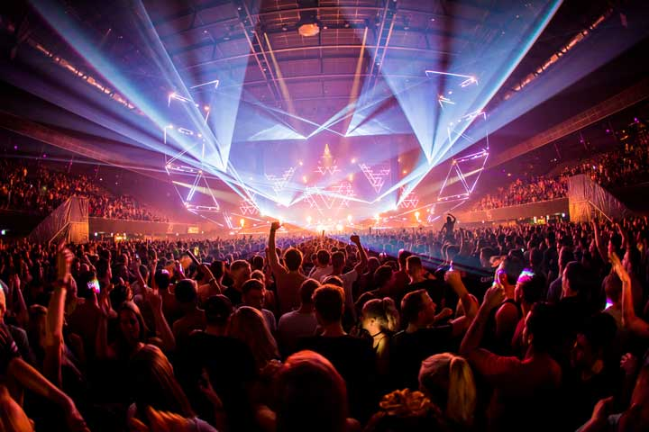
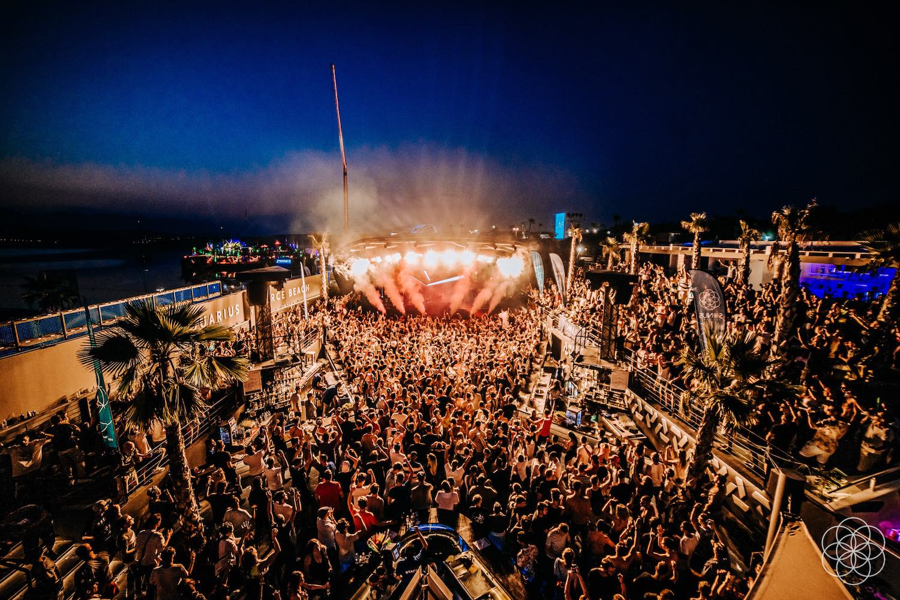
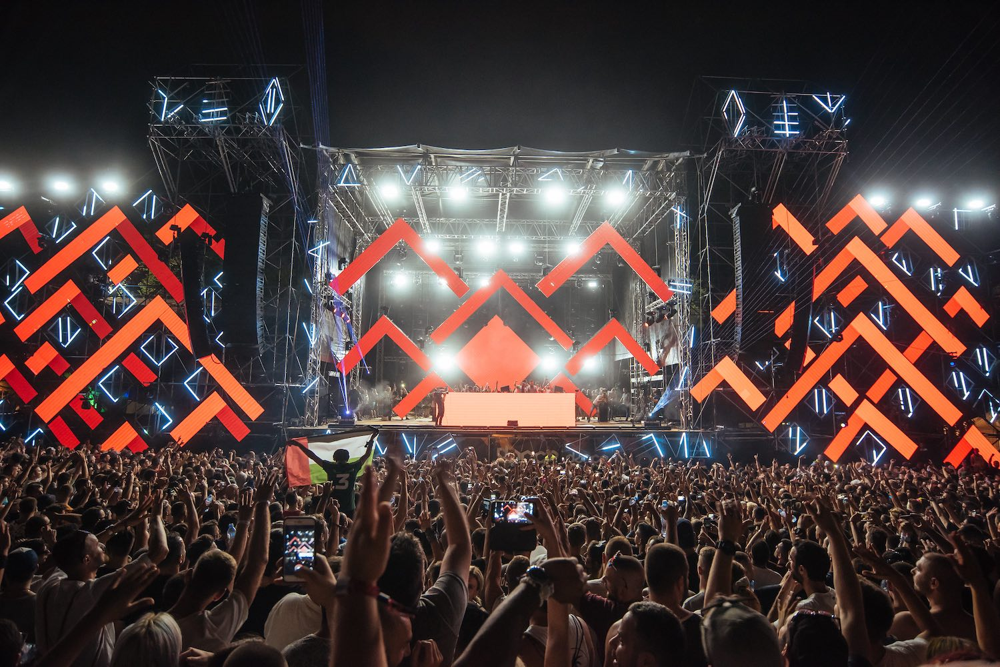
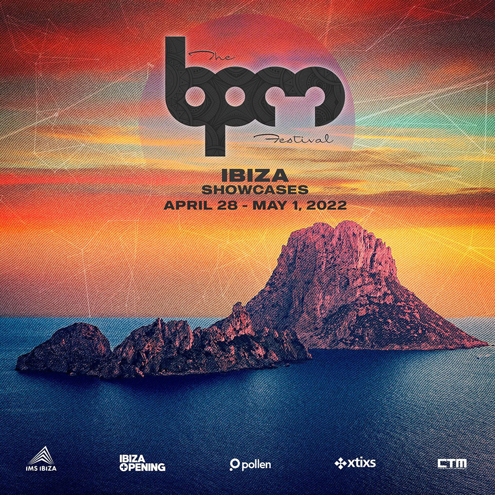
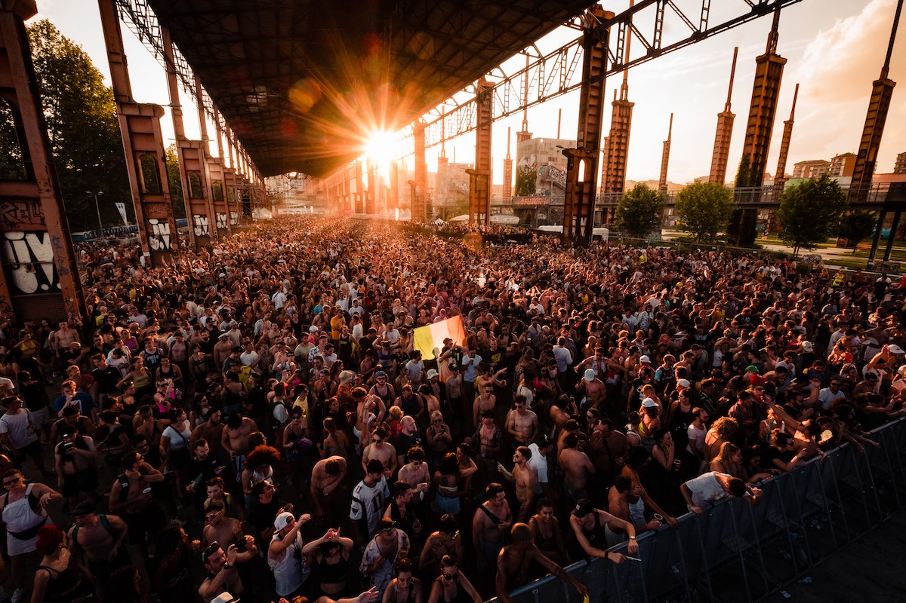

4
ADE
Big, bigger, ADE. With 1000 events at more than 200 venues, ADE breaks all boundaries. ADE is regarded as the leading music conference for all genres of electronic music, but not only trade visitors get their money's worth. While the conferences are held during the day, over 2,500 artists play at night. In 2018, 400,000 festival visitors from over 100 countries were attracted.
Tickets & more
5
SONUS FESTIVAL
Sonus Festival is a famous 5-day techno party at Zrce Beach, Novalja, in Croatia. The legendary creators behind Time Warp have steered the ship to the Croatian coast for one of Europe’s most celebrated house and techno festivals. Sonus occupies Zrce’s coastal clubs Aquarius, Kalypso and Papaya for both day and night stages, while boat parties spread the vibe across the sparkling Adriatic Sea
Tickets & more6
EXIT FESTIVAL
After a forced hiatus in 2020, Exit Festival returns to its iconic fortress location in Serbia for another weekend filled with basslines, beer, and debauchery! With a completed stacked line-up this year with headliners like Paul Kalkbrenner, Amelie Lens, Solomun, Artbat, Hot Since 82 (and a whole lot more), for techno enthusiests in Europe this summer, this could be an amazing beginning to the return of festivals!
Tickets & more7
BPM FESTIVAL
BPM Festival has grown over the years to become one of the most globalley recgonized names in the techno festival industry. What started out as as a week-long event with the most impressively stacked line-ups in Tulum, Mexico – BPM has now changed it’s ways and has thrown festivals in places like Costa Rica, Portugal, and Tel Aviv.
Tickets & more
8
KAPPA FUTUR FESTIVAL
“A true giant of the European electronic music scene, Kappa FuturFestival has become something of an annual pilgrimage for techno fans, heading to the city of Turin for a weekend in the company of the industry’s finest.
Tickets & more
9
MUSIC ON FESTIVAL
Music On Weekend 2022 the iconic musical experience hosted by Marco Carola, invites Jamie Jones, The Martinez Brothers, Loco Dice, Paco Osuna, Nic Fanciulli, Danny Tenaglia and many more. The festival in Amsterdam will be preceded by shows in London, New York, Miami, Detroit, Las Vegas, and afterwards Music On will head to Ibiza for its 8th annual residency.
Tickets & more
10
TOMORROWLAND

“Live Today, Love Tomorrow, Unite Forever” - this motto of runner-up and most multinational and successful electronic festival worldwide says it all. Raising the experience of electronic music to the next level. 2018 was all about The Story of Planaxis - a tale about mysteries, a new perspective on life and most valuable gifts of mother nature and brought 1,000 artists from all electronic genres giving joy to 400,000 people.
Tickets & more